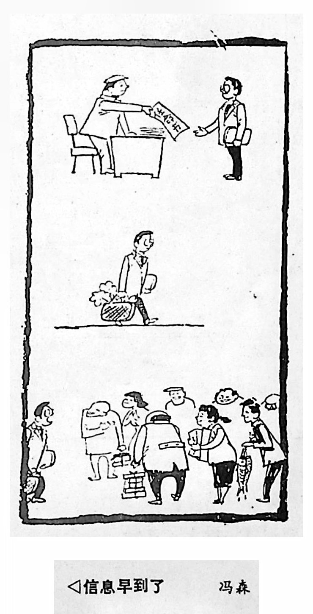

冯森 《人事》1986年第1期（总第4期），封三
信息早到了
The News Got There First
- Description
- Three panels: an official signs off a document; a man hurries off with gifts; at the destination a crowd bearing gifts is already waiting.
- Artist
- Feng Sen 冯森
- Published in
- 《人事》1986年第1期（总第4期）, inside back cover
- Themes
- Connections (guanxi) · Gifts and banquets · Promotion

Cite
Feng Sen, “信息早到了” [The News Got There First], Renshi (Personnel) 《人事》, 1986, no. 1, inside back cover.